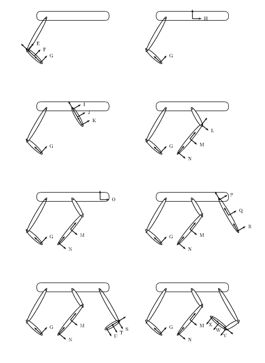

The basic geometry of a mechanical system is defined by tree of coordinate frames in trep. The root of the tree is the fixed System.world_frame. Every other coordinate frame is defined by a coordinate transformation relative to its parent. The coordinate transformations are either fixed or parameterized by a single configuration variable. For example, a rotational joint is modeled as a rotation transformation where the angle is controlled by a configuration variable.
Coordinate frames also define the masses in the system. For every mass, a coordinate frame must be placed with the origin at the center of mass and the axes aligned with the principle axes of the rotational inertia. Coordinate frames can also be mass-less, or have a mass but no rotational inertia to model point masses.
A Frame object can calculate its global position and body velocity, and their derivatives.
There are a fixed set of coordinate transformations to define each frame:
| Constant | Description |
|---|---|
|
Rotation about the parent’s X axis. |
|
Rotation about the parent’s Y axis. |
|
Rotation about the parent’s Z axis. |
|
Translation about the parent’s X axis. |
|
Translation about the parent’s Y axis. |
|
Translation about the parent’s Z axis. |
|
Constant SE(3) transformation from parent. |
|
Unique World Frame. |
The first six transformations can either be parameterized by a fixed constant or a configuration variable. The CONST_SE3 transformation can only be fixed.
The WORLD transformation is reserved for the system’s world_frame.
New coordinate frames can be directly defined using the Frame constructor. For example, this will create a simple pendulum:
>>> import trep
>>> system = trep.System()
>>> frame1 = trep.Frame(system.world_frame, trep.RX, "theta")
>>> frame2 = trep.Frame(frame1, trep.TZ, -1, mass=4)
This gets tedious and makes it difficult to see the mechanical structure, so trep provides an alternate method to declare frames using Frame.import_frames() and a few extra functions:
The parameters are the same as for creating new Frame objects directly, except the parent and transform type are gone. The transform type is implied by the function name. The parent will be implied by how we use the definition.
Frame.import_frames() expects a list of these definitions. For each definition, the frame will create a new frame and add it to it’s children.
For example, suppose we had a frame with 6 children:
>>> child1 = Frame(parent, trep.TX, 'q1')
>>> child2 = Frame(parent, trep.TY, 'q2', name='favorite_child')
>>> child3 = Frame(parent, trep.TZ, 'q3')
>>> child4 = Frame(parent, trep.RX, 'q4')
>>> child5 = Frame(parent, trep.TX, 'q5')
Using Frame.import_frames(), this becomes:
>>> children = [
... trep.tx('q1'),
... trep.ty('q2', name='favorite_child'),
... trep.tz('q3'),
... trep.rx('q4'),
... trep.tx('q5')
... ]
>>> parent.import_frames(children)
We can also add children to these children. If Frame.import_frames() finds a list after a frame definition, then it will call the new call the new child’s import_frames() method with the new list.
For example, the pendulum we created earlier, can be defined as:
>>> import trep
>>> from trep import rx, tz
>>> children = [
... rx('theta'), [
... tz(-1, mass=4)
... ]]
>>> system.world_frame.import_frames(children)
Since Frame.import_frames() works recursively, we can describe arbitrarily complex trees. Consider this more complicated example:
The corresponding frame definition is:
import trep
from trep import tx, ty, tz, rx, ry, rz
system = trep.System()
frames = [
ty(-0.5, name='Base'),
ty(-0.2), [
ry('J', name='J'), [
tz(-0.5, name='I', mass=1),
tz(-1), [
ty(-0.1), [
ry('H', name='H'), [
tz(-1, name='G', mass=1),
tz(-2, name='O2')]]]]],
ty(-0.1), [
tx(-1.5), [
ry('K', name='K'), [
tz(-1, name='L', mass=1),
tz(-2), [
ty(0.1), [
ry('M', name='M'), [
tz(-0.5, name='N', mass=1),
tz(-1.0, name='O')]]]]]],
ty(0.5), [
tx(1.5), [
ry('A', name='A'), [
tz(-1, name='B', mass=1),
tz(-2), [
ty(-0.1), [
ry('C', name='C'), [
tz(-0.375, name='D', mass=1),
tz(-0.75), [
ty(-0.1), [
ry('E', name='E'), [
tz(-0.5, name='F', mass=1),
tz(-1.0, name='G2')]]]]]]]]]
]
system.import_frames(frames)
This is much more concise than defining the frames directly. It is also easier to see the structure of the system by taking advantage of how most Python editors will indent the nested lists.
A convenience functions is also provided to create constant SE(3) transformations from an angle and an axis.
Build a 4x4 SE3 matrix corresponding to a rotation of theta radians around axis.
Create a new coordinate frame attached to parent. transform must be one of the transformation constants and defines how the new frame is related to the parent frame.
param is either a number or a string. If param is an number, the frame is fixed relative to the parent.
If param is a string, the frame’s coordinate transformation is controlled by a configuration variable. A new configuration variable will be created using param as the name. By default, the new configuration variable will be dynamic. If kinematic is True, it will be kinematic.
If transform is CONST_SE, param must be a 4x4 matrix that defines the Frame’s constant SE(3) transformation relative to parent.
name is an optional name for the frame.
mass defines the inertial properties of the frame. If mass is a single number, it is the frame’s linear mass and the rotational inertia will be zero.
mass can also be a list of 4 numbers that define the Frame’s mass, Ixx, Iyy, and Izz inertial properties.
| Parameters: | q (Config) – A configuration variable in the system. |
|---|
Determine if this coordinate frame depends on the configuration variable q.
When a frame does not depend on a configuration variable, the derivatives of its position and velocity will always be zero. You can usually improve the performance of new constraints, potentials, and forces by checking for this and avoiding unnecessary calculations.
The Config that parameterizes the frame’s transformation. This will be None for fixed transformations.
(read only)
The parent frame of this frame. This is always None for the System.world_frame, and always a valid Frame otherwise.
(read only)
A tuple of the frame’s child frames.
(read only)
Create a list of the frame and its entire sub-tree. There is no guarantee on the ordering other than it won’t change as long as no frames are added to the system.
Return a string that visually describes this frame and it’s descendants.
Import a tree of frames from a tree description. See Defining the Frames. The tree will be added to this frame’s children.
Create python source code to define this frame and it’s sub-tree. The code is returned as a string.
Transformation type of the coordinate frame. This will be one of the constants described in Frame Transformation Types.
(read only)
Current value of the frame’s transformation parameters. This will either be the fixed transformation parameter or the value of the frame’s configuration variable.
Set the SE3 transformation for a const_SE3 frame.
The coordinate frame can have mass at its origin and rotational inertia about each axis.
These functions calculate the coordinate transformation to the frame from its parent in SE(3) and the derivatives of coordinate transformation with respect to the frame’s configuration variable. If the frame is fixed, the derivatives will be zero. The returned values are 4x4 numpy arrays.
These functions calculate the global coordinate transformation in SE(3) for the frame (i.e, the coordinate transformation from the world frame to this frame) and its derivatives with respect to arbitrary configuration variables. The returned values are 4x4 numpy arrays.
These functions calculate the inverse of the global coordinate transformation in SE(3) for the frame (i.e, the coordinate transformation from this frame to the world frame) and its derivatives with respect to arbitrary configuration variables. The returned values are 4x4 numpy arrays.
These functions calculate the global position of the coordinate frame in R^3 for the frame (i.e, the origin’s location with respect to the world frame to this frame) and its derivatives with respect to arbitrary configuration variables. The returned values are 4x4 numpy arrays.
Calculate the twist and the body velocity of the coordinate frame in se(3). The returned values are 4x4 numpy arrays.
Calculate first derivative of the body velocity with respect to the value or velocity of a configuration variable. The returned values are 4x4 numpy arrays.